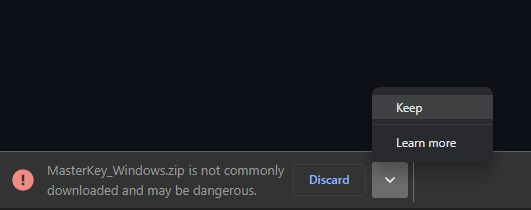
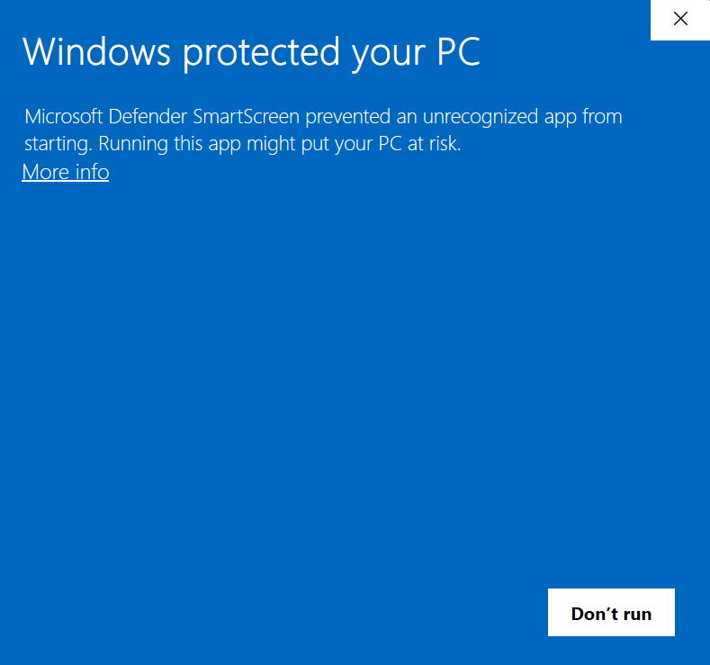
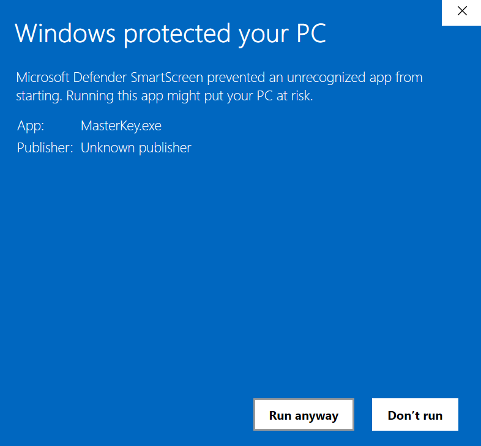

- Step 1: Download the file by clicking keep.
- Step 2: Extract the downloaded file
- Step 3: Bypass the Microsoft Defender warning
Click the arrow and click keep
if you receive the same warning while downloading the MasterKey app.

Once the file 'MasterKey_Windows.zip' has been downloaded, right-click the
file, and choose Extract from the context menu and Extract the file where
you want.

The MasterKey app is ready to use after extracting the file. Once you
open the masterkey.exe file you will receive a Microsoft Defender warning.
Click More info and then
click Run anyway to continue using the application.

